| Miracle Healing Power: 奇蹟の時間に体験した 天使からの愛のメッセージ (LANI PUBLISHING) | |
| レイア高橋 | |
| (2017) | |
このお話は、２０１４年３月にオートバイの大事故に巻き込まれ、生死の淵から蘇った私が体験した「奇跡の癒し」の経過を綴ったブログに、未収録だった天使との会話集を追加し構成したものです。
日頃私と交流を持って何度も不思議な体験をされている方はごく自然に受け入れられると思いますが、私のことを知らない方は信じられない話だと思うことでしょう。
私の個人的な体験をありのままに綴っただけで、科学的に証明することはできませんのでご了承ください。
ここから先は、目に見えない世界に繰り広げられている真実を知りたいという勇気のある方にお届けいたします。
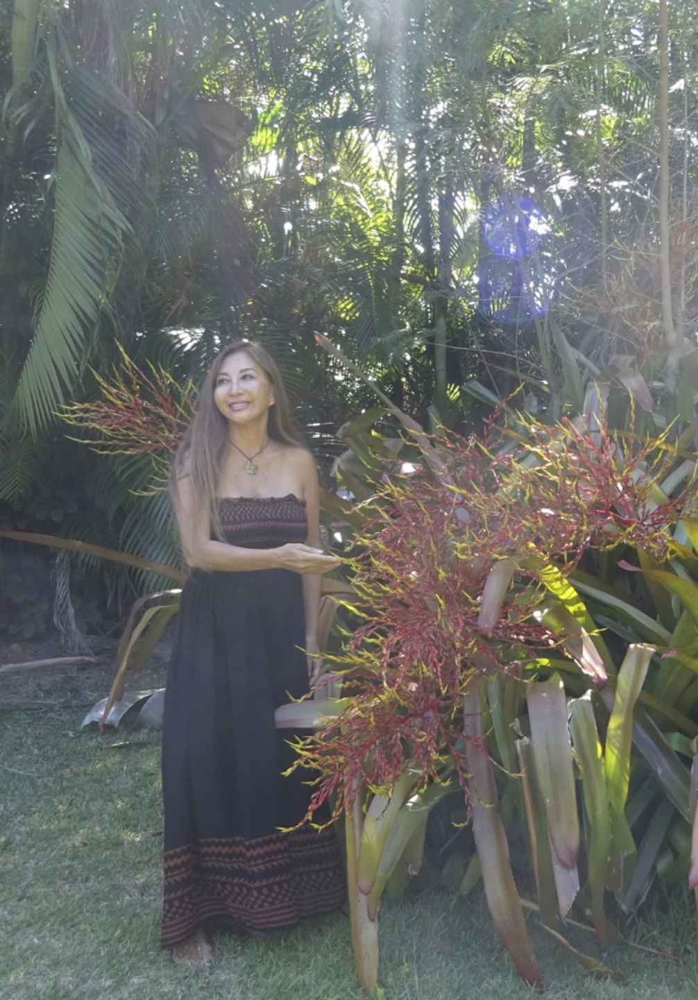
２０１４年３月29 日
ハワイで数百台の大型モーターサイクルのグループが参加するチャリティー・イベントが開かれました。
前日の夕食時、私はハナイ義父（注）から、母に代わってそのイベントに参加してほしいと誘われたのですが、数日後に控えたアリゾナ出張の準備や、締め切りが迫っている原稿の仕上げに追われていたので、内心ではお断りしたいなと思いました。
（注・ハナイ＝ハワイでの養子縁組のこと。フラやロミロミといった伝統文化においても行われています）
ところが『チャリティーだから、ぜひ参加を』という言葉の響きに正義感が湧いてきて、つい『イエス』と答えてしまったのです。
何でも気軽に受けてしまう私の悪い癖です。
当日、午前10
時の約束に間に合うように、ハナイ母の家に向かって車を走らせていた時のことです。
私は突然に後ろから大きな力に引っ張られるような感覚を覚え、背筋がゾクッと寒くなりました。
こんな状態になるときは、世界のどこかで大きな災害が起こったり、知り合いがネガティブなエナジーに引き込まれて助けを求めていたり、といったことが多いのです。
それを最小限にくいとめるためには、一刻も早く周辺の波動を整え大きな愛で満たすことが必要です。
一瞬、「約束に遅れたらどうしよう」という思いが頭をよぎりましたが、ひとまず路肩の木陰に車を停めて瞑想をしてみることにしました。
アンデスの麓でシャーマン修行をしていた頃に学んだ宇宙の法則、ネイティブ・アメリカンの教えを学ぶ中で体験した大自然の法則、そして私のハナイ母から授かった古代ハワイアンの智慧......それらはすべて同じところにつながっています。
瞑想により自然と一体になることで地球の波動と同調し、時空を超え宇宙の源につながると、必要な答えにたどり着くのです。
『マハロ・ヌイロア・ケアクア、偉大なる大自然よ。どうか、私に答えを与えてください......』
昨年（２０１２年）の秋から今年の始めにかけて、人類のシフトの影響で地球のあちこちにエナジーのひずみができています。聖なる波動を持つ人たちがたくさんの困難や混乱に巻き込まれています。
人々の精神レベルの二極化によって、流れに乗れる人と振り落とされる人の差がどんどん激しくなっています。
一時的には成功への道を進んでいた人も、正の波動から外れると奈落の底に転落します。その逆に、いままで沈んでいた人であっても、正しい道に戻れば素晴らしい成功にたどり着きます。
そんな流れの中で、トルネード、洪水、度重なる地震や津波など各地に地球の浄化作業の影響が続いており、今年に入ってからの３か月間、私は毎晩のように世界各地のライトワーカー（地球を愛で満たすための役割を持った人）たちと一緒に浄化を行っていました。
私一人の力だけでは世の中のすべてを変えることはできませんが、世界中に私と同じように、世の中を光で満たすために地道に活動しているヒーラーたちが存在しています。
みんな表立っては出てきませんが、彼らの活躍によって、どのくらいこの地球が救われているのか計り知れません......。
木陰に車を停めた私は、HA（ハー）の呼吸法ですぐに瞑想状態となりました。まもなく目の前に、美しく輝く大きな光の柱が３本現われました。この柱は、瞑想の時に良く現れる異次元につながるシンボルです。金色に光る柱の間から穏やかな声が語りかけてきます。
『人類がシフトするために、あなたは命を賭けますか？』
みんなのしあわせのために心を尽くすことは私のライフワークです。
私は、即座に『もちろんです』と答えました。
『地球の浄化が急速に始まっています。
あなたの光が必要です。
闘うのではなく愛を送りなさい。
闇を恐れてはいけません。
光は闇よりも強いことを、そして愛がすべての答えだということを決して忘れないように......』
その言葉を残して光の柱は天に吸い込まれるようにスーッと消えていきました。柱から発せられた心地良い波動に包まれて、私の心は落ち着いていました。
『マハロ、ヌイロア......』
世界中が愛で満たされるように心から祈りを捧げて瞑想は終わりましたが、結局、引っ張られるような大きな力が何であるのかについての答えは与えられませんでした......。
瞑想で約束の時間に間に合わなくなってしまった私は、『やはりイベントへの参加を断ったほうがよいのではないか』という気がして、義父に電話をかけました。
ところが、なんと『約束の時間に遅れてすみません。でも、今日のイベントは世界を救うためにとても大きな意味があるので、いまからすぐに駆けつけます！』と言ってしまったのです。
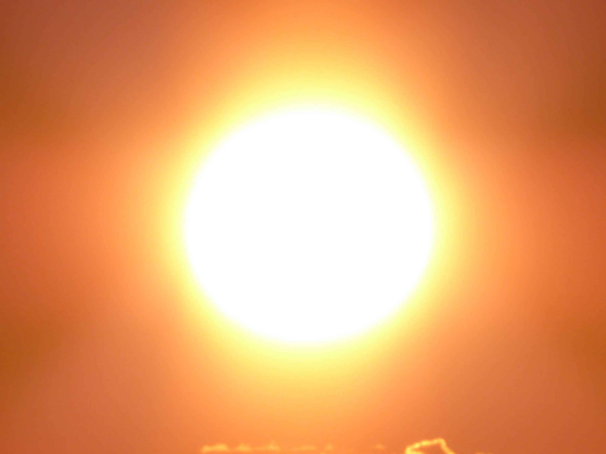
義父は、『ハハハ。マヌアヒ、相変わらず大げさな表現だね。遅刻は気にしなくていいから早くいらっしゃい。待っているよ』と笑って答えました。
（な、なんで？ 断るつもりだったのに......）
私は自分の口から出た言葉が信じられませんでしたが、それでもはっきりと行くと言ってしまった以上は仕方がありません。慌ててハナイ母の家に車を走らせたのでした。
そして......。何気なく引き受けたイベントへの参加が、新たなるシフトへの運命の扉を開くことになるとは......このときは、夢にも思いませんでした。
その後、まさか想像を超えた壮絶な体験をするとは夢にも思わずに、チャリティー・イベントに参加することになった私でしたが......。
10
時20
分、ハナイ母の家に到着した私は自分の車をガレージに停めて、義父の自慢である１４００㏄
ホンダのバイクの後ろに乗り込みました。ヘルメットをかぶり、お財布と携帯電話を座席の後ろのコンパートメントにしまってもらって、いざ出発です。
49 年のモーターサイクル歴を誇り、世界各地を何万キロもバイクで走破している経験豊かなライダーの義父は、すでに出発したグループとマイクで交信しながら、Ｈ１フリーウェイを滑るように優雅に走り、速やかにみんなと合流しました。
数百台の大型バイクの群れが何マイルも続く様子は、見ているだけでも圧巻です。
チャリティー・イベントだけあって、黒皮のベストにバンダナ、タトゥー入りのライダーたちがマナーを守り、整然と走っている姿が、妙にカッコよく見えます。
やがて大型バイクの集団はＨ１フリーウェイを降りて、ノースショアに向かうのどかな田舎道クニアロードに入りました。
まわりを囲む美しい緑の山々、バイクの振動と頬に当たる風が気持ち良いノースへの道。私は、このままどこまでも風を感じて走り抜けたい気持ちになっていました。
やがて道路が少し登り坂になり、下りに向かって視界が開けたその瞬間のことです......。再び、朝に感じたあの何かに引っ張られるような大きな力が襲ってきました。
ゾクッとする嫌な予感が心をよぎります。
そのとき、前方に大きな黒い竜巻のような、モヤモヤしたものが空から降りてくるのが見えたのです。
（あれは何？）
と思っているうちに、その黒いモヤモヤはまるで生きているかのように私たちの前を走っている一台のハーレーを包み込みました。
ハーレーのドライバーはつまみあげられたような恰好で道路に投げ出され、モヤモヤがなんとも気持ちの悪いエナジーを発しながら、空中にウネウネ渦巻いているのが見えたと思ったら、ドライバーを失ったハーレーが勢いよく私の目の前に滑って来て......。
その瞬間、『ガツーン！！！』
私は体に大きな衝撃を感じたのでした。
ついいましがたまで、のどかな田舎道だったクニアロードは、一瞬にしてハーレーとそのドライバー、私と義父の運転するホンダのバイク、そして後続のもう一台を巻き込んで、悪夢のような大事故現場と化してしまったのです。
いったい何が起こったのでしょう......。
その様子は、私の目の前でまるで３Ｄの映画を見ているかのようにスローモーションで展開していきました。
私の目の前に、黒いモヤモヤに襲われたハーレーがコントロールを失って迫ってきます。
義父の声が聞こえます。
『Oh! No!!!』
（えっ？ あぁ、ぶつかる！）
その瞬間にガツーンという大きな衝撃を感じた私。
（やられた......）
体中に響く衝撃の後、私のすぐ右側にガードレールが迫ってくるのが見えました。
（きゃ、足が挟まれる！）
そう思った瞬間に、グワーンという鈍い音とともに体を引き裂くような鋭い痛みが右脚に走ります。
（うっ、脚が燃えるように熱い！ ３日後に控えたアリゾナ出張、その後のセミナー、これはちょっとヤバイな......）
２度目の衝撃で私の体は宙に高く飛ばされました。
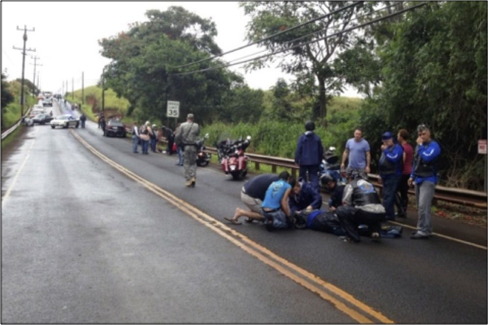
（写真）３月29
日午前11
時25
分頃のクニアロード。
その時、あの黒いモヤモヤが大きな牙を持った悪魔のような姿で、私に向かってきたのです。
『愛の使者など必要ない！』
『邪魔をするな！』
そう聞こえたような気がしました。突然のことに、いったい何が起こっているのかわかりません。
モヤモヤはうねりながらいったん空高くに上がります。そこから発散される重い波動は、まさしくその日の朝私が感じた重く引っ張られるようなあの感覚でした。
（アレはいったい何だろう......）
モヤモヤが近づいてきた時、次第に悪魔のような姿がぼやけて黒い煙の中にいくつかの顔が浮かび上がってきました。
それがなぜか普通の人間の顔なのです。
日頃から愛を送り、しあわせを願っている知り合いの顔があります。
（あれは負のスパイラルから抜けられず苦しんでいるあの子だわ......）
（魔の波動に取りつかれて道を踏み外してしまったあの子もいる......）
（あっ、身内を亡くして悲しみから立ち直れないあの子が......）
それらの顔がそれぞれ悲しみや憎悪に満ちた表情で私を睨みつけながら、地の底から絞り出すような声にならない声でなにやら呻いているのが聞こえます。
『助けて......』
『ごめんなさい......』
『邪魔するな......』
『苦しいよ......』
私は一瞬のうちにこのモヤモヤは、心の闇に引き込まれてしまった人々が放つネガティブな波動の集団なのだと気づきました。
人々が意識的に、または無意識に発散する悲しみや苦しみが浄化できずに、この地上に増殖して力を増してきているのでしょう。
そして、いままさにそれが私の目の前に迫って来ています。
地球の浄化を行っている私の存在が邪魔なのでしょうか......。それとも何かもっと深い意味があるのでしょうか......。
私は目の前で展開されているＳＦ映画のような光景に驚きはしたものの、なぜかまったく恐怖は感じていませんでした。朝の瞑想の時に受け取った言葉が心をよぎります。
『地球の浄化が急速に始まっています。
あなたの光が必要です。
闘うのではなく愛を送りなさい。
闇を恐れてはいけません。
光は闇よりも強いことを、そして愛がすべての答えだということを決して忘れないように......』
私は襲いかかってくる黒いモヤモヤに向かって祈りました。
『ネガティブなエナジーよ。本当のあなたは愛の存在であることを思い出しなさい。浄化され、光となって天に帰れるように、心からの......愛を......送り......』
祈りの言葉が終らないうちに、いきなり、バコッ。モヤモヤから腕のようなものが伸びて私は左の顎を殴られました。
（いきなり殴るなんて......いったいどうなっているの？）
不意打ちを食らった私は、『何てことするのよ。痛いじゃないの！』
と叫びながら、首にかけていたお守りのペンダントを右手で握りしめました。すると、モヤモヤの中にある顔のひとつが近づいてきて、いきなり私の右腕に噛みついたのです。
『痛い！』
何かの毒があるのか、私の右腕はみるみる大きく腫れあがって感覚を失いました。驚いた私がペンダントから手を離した瞬間に、モヤモヤは私の首からペンダントを引きちぎり遠くに放り投げました。
事故現場の空中で展開されている奇妙な戦いに巻き込まれてしまった私でしたが、その時、あることに気づいたのです。
得体の知れないモヤモヤは、いったい何の目的があっていきなり私の腕に噛みついたのでしょうか。
私は何が起こっているのかわからないながらも、そのとき面白いことに気づいたのです。
血走った目に大きな牙がある悪魔のような恐ろしい形相のモヤモヤは、ハーレーのドライバーを簡単に放り投げるほどの怪力があるはずなのに、私の顎を殴ったパンチはたいしたことありませんでした。
そして、腕に噛みつかれたときには、普通の人間の歯のように小さな傷しか残らなかったのです。
どう考えても、私に近づくと力が弱くなるとしか思えません。
遠目には醜くて怖そうに見えても、本当は弱いものが虚勢を張っているだけなのでは......。
怖い形相は人間の心が創りだすイメージで現れると言いますが、私のイメージの中では、きっと邪悪なエナジーはこの悪魔のような姿となって現われるのでしょう。
そう言えば、いままでにも何度か道から外れて邪悪なモノに憑つかれた人の後ろに、この悪魔の姿が現れたのを見たことがありました。
憑かれた本人は悪魔にコントロールされていることには気づきません。そんな時には、その人が早く正道に戻れるように愛を送り続けるしかありませんでした。
そしていま、このモヤモヤの動きを見て、光が強ければ悪の存在はそのパワーが弱くなることに気づいたのです。以前から何となくそう思ってはいたものの、この場で確信を持ちました。
それならば、私はネガティブな波動に打ち勝つためにもっと清らかでもっとパワフルな光を放つことができる人になりたいと思いました。
私はモヤモヤに向かって祈り続けました。
『あなたを愛で包みます。悲しみや苦しみを手放して鎮まりなさい！』
すると......空中に飛んだペンダントのあたりから、突然目がくらむような眩しい光が放射されたのです。
カメラのストロボのような光です。その光を浴びたモヤモヤは、『グエー』と苦しげな声をあげて、私から離れました。
モヤモヤは、必死で力を取り戻そうとしているのか、クネクネと不自然に動いています。そして渦巻きのようにとぐろを巻きかけた瞬間、突然『パーン』という音がして、いきなりバラバラに弾けて灰が風に飛ばされるように四方八方に散っていきました。
一瞬、空を埋め尽くすような黒い煙が広がります......。
そして静寂......。その時です、天空から七色の光と共に天使たちが舞い降りて来るのが見えました。
ピーターパンのティンカーベルのようなかわいい女の子のイメージで、透き通るような肌と白い大きな羽を持っています。最初は森の妖精かなと思いましたが、なぜだか天使だという確信に変わりました。
天使たちのまわりに光の粉がキラキラ舞っています。
『わー、助けに来てくれたのね。ありがとう。......それとも、あの、もしかして私が天国に召されるためのお迎えなの？』
天使たちは何も言わずに優しい微笑を浮かべながら私の左腕をつかみ、私の体をフワッと空に引き上げてくれました。角度が変わって下のほうに地上の様子が見えます。
そこで見たものは......。
バイクから飛ばされて、ガードレールの反対側の雑草の中に放り出されている自分の姿が見えました。
体が不自然に曲がったままで動いていません。
バイカーたちが私のまわりを取り囲んでいます。みんな肩を落としてうつむいています。誰かが私の体にタオルをかけました。
（私、死んじゃったのかな......）
その様子をぼんやり見ていた私に向かって天使が静かに言いました。
『あなたはこの地上でまだたくさんやることがあります。
今日は浄化を手伝ってくれてありがとう。これからも愛だけを送り続けてくださいね。さあ、戻りなさい......』
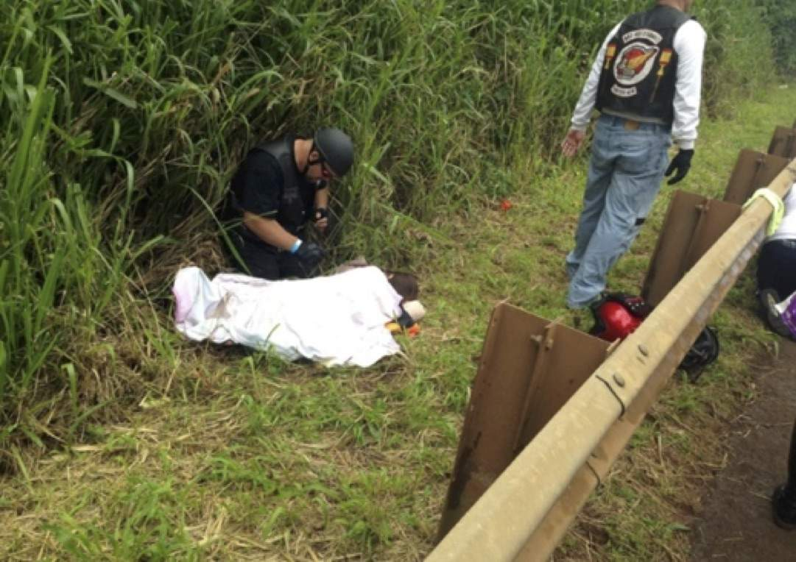
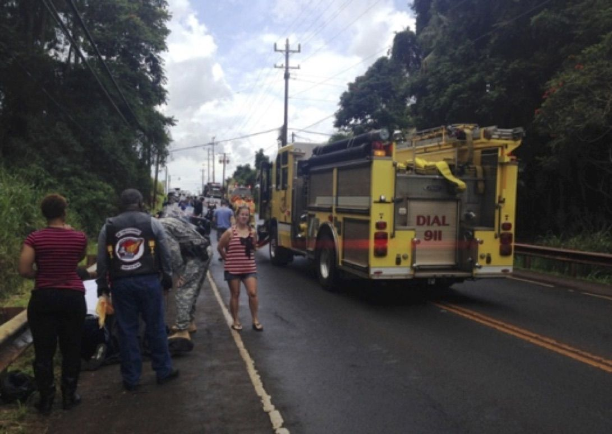
天使たちはそう言うといきなり私の体を支えていた手を離しました。
（えっ？ 離しちゃうの？ ちょ、ちょっと待って......）
アッと思う間もなく私はそのままドスンと地面に落ちて、その瞬間に再び体中に鋭い痛みが蘇ります。見上げると、天使たちが上空からニコニコしながらこちらを見ていました。
周囲でザワザワと人の声がきこえます。
『おい、意識があるようだ』
『え？ ......生きていてよかったよ』
『あんなに高く飛ばされて生きているなんて奇跡だね』
『でもこの腫れじゃ、腕も脚も骨折だぜ』
『救急車はまだか......』
『いま、警察が向かっている』
やがて何人かのバイカーが私に話しかけました。
『君の名前は？』
『いま、どこにいるかわかるか？』
『何が起こったのか覚えているかい？』
私はそれらの質問に正直に答えました。
『はい、心地良く走っていると、前方にモヤモヤとした黒い煙のようなものが渦巻いているのが見えました。そのモヤモヤが前を走るハーレーを包み込み、ドライバーが投げ出されました。ドライバーを失ったハーレーが私たちのバイクに向かって滑ってきてぶつかり、そしてモヤモヤが私に向かって迫ってきたのです。それから......』
気がつくと、みんなが混乱した表情でポカンと私を眺めています。
（しまった！ みんなには、アレが見えなかったんだわ......）
私は慌てて言いました。
『あの......。私、体は痺れていますが頭は狂っていないので大丈夫です。前方からハーレーが勢いよくぶつかってきて、その後私はガードレールにぶつかってその衝撃で飛ばされたと思います......。右腕と右脚に痛みを感じますけど、他はたぶん大丈夫です......』
そう説明をしてみたものの、みんなの不審そうな表情は消えません。
蘇生した私のおかしな発言と、痺れて動けない体、腫れた右腕と骨まで届いているらしい深い脚の傷を見て、全身打撲・脊椎損傷・大腿骨及び前腕骨折という状態に加えて、事故のショックで幻覚を見ているか、脳に損傷を負って自分の言っていることがわからないのではないかと判断されてしまったようです。
そうです。人は目に見えるモノしか信じることはできないのです。
こんなとき、いつも自分だけが見えないモノに触れているという孤独感を覚えます。
その後も私が意識を失わないように、次々に誰かが何か話しかけてくれていましたが、私は、みんなの質問にうわの空で答えながら、たったいま自分に起こった不思議な体験をもう一度始めから思い出してみようと、心の中で再現フィルムを再生してみました。
突然の大事故に巻き込まれ不思議な体験をした、私の３Ｄ映画のような再現フィルムが終わったときに、ちょうどタイミングよく救急車が到着しました。
私は救急隊員によって、首にコルセットをはめられ体を固定された状態で担架に移され、救急車に運ばれました。
サイレンを鳴らしながら走る救急車の中では、実に手際よく応急処置が行われます。
はいていたジーンズも下着もタンクトップもハサミで切られ、腕には点滴の針が入れられ、酸素マスクをはめられて、すぐに手術に入れるように準備しています。
救急隊員が受け入れ先のクイーンズ病院と連絡を取っている内容から、やはり私はかなり重傷らしいことがわかりました。
私自身はといえば、脚と腕に耐えがたいほどの激痛を感じていましたが、事故現場から救急車の中までついてきた天使たちがくだらない冗談を言って笑わせようとしてくれたお蔭でかなり落ち着いていましたし、すでに少しずつ傷が癒えてくる様子を体感していました。
最初に感じたのは、傷に温かいお湯をかけられているような感覚です。その次に、体中のずれた骨が元に戻っていくような不思議な感覚でしたが、それは細胞の一つ一つがプチッ、プチッとつながっていく感じというか、蘇っていく感じです。
確実に体の内側から少しずつ傷が治っていくのがわかりました。
クイーンズ病院のＥＲに到着すると、すでに救急のスタッフが待機していて、私は担架に乗せられたまま手早く手術室に運ばれました。
そして、天井の大きなライトが眩しいと思ったとたんに、麻酔が効いて意識が遠のいていきました......。
馴染のある神様たちや天使たちがたくさん登場する、不思議な夢を見ました。
それは、みんなの罪を背負って浄化したお礼にパワフルなヒーリング能力を授かるという、なんともありがたい夢でした。
夢から覚めると、事故の報告を受けたハナイ母が病院に駆けつけてくれていました。
母は自分に代わってイベントに参加した娘と愛する夫が事故に巻き込まれたことに大変心を痛めていました。
しかし私は、事故に遭ったのがこの母ではなくて良かったと心から思い、優れたサイキック・ヒーラーである母が放つ慈悲の光に包まれて、安らかな思いに満たされました。
ちなみに、一緒に事故に遭った義父は、右腕の神経がズタズタに引き裂かれ、肋骨と胸骨を折り、出血多量の重傷で病院に運び込まれたそうですが、命はとりとめ、その後奇跡的な回復で関係者を驚かせたようです。彼もこの世の浄化を手伝った聖なる人なのでしょう。
ふと見ると、ズキズキと痛みを感じる私の脚にジグザグに縫い合わせた傷があり、一番深い傷口はまだ開いたままで大きなテープが張られて、汚れた体液を出すためにチューブが埋められていました。
いつのまにか３倍ぐらいに腫れ上がった腕にはくっきりと歯形が残り、左の顎には殴られたような青あざがあって、コルセットをはめられている首元には引っ掻いたような跡が残っていました。
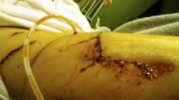
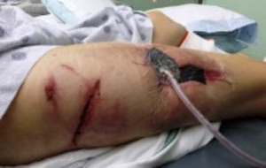
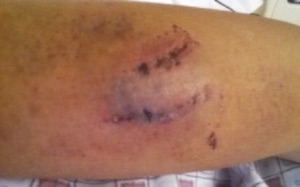
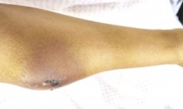
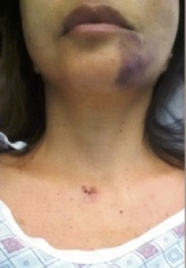
その後、ベッドに寝たままレントゲン室に運ばれ、いろいろな角度から全身のレントゲンを撮られ、ＣＴスキャンを受けました。
私自身はその時点で骨折はしていないことを知っていましたし、脳にも脊椎にも損傷はないことも確信していたのですが、レントゲンとＣＴスキャンの結果をみた医師からは、最初に救急車で運ばれてきた時の状況からは考えられない奇跡だと言われました。
すべての傷は、ほんの５ミリぐらいの差で骨を避け、致命的な神経や血管や筋肉の損傷を避けていたようです。
『手と脚の外傷以外に脊椎も内臓もなんともないというのは、本当にラッキーだったね、君はきっとエンジェルに護られているんだね』
と言われました。私は思わず、
『そうなんですよ。事故の時助けてくれて、それからずっと一緒にいてくれるんですよ......』
と言ってしまいましたが、そこにいる誰も私が体験した真実を想像することはできなかったでしょう。
それを聞いていた天使たちが、傍らでケラケラと笑っています。骨折はなかったものの腿の傷がかなり深く、奥のほうまで土や葉が入り込んで汚れていたため、３日後に再度手術が必要ということでした。
すべての処置が終わって集中治療室からようやく病室に移された時には、すでに夜の10
時をまわっていました。
看護士さんが義父のバイクのコンパートメントに入れておいたはずの私の携帯電話と財布を渡してくれました。
（そうだ、家に残してきた猫の世話を誰かに頼まなくては......）
とても長い一日でした。朝、家を出た時には、まさかこのような状況になるとは想像もしていませんでした。
人のことは驚くほどの的中率で予言できるのに、なんでいつも自分のことはわからないのでしょう。
いつも予期せぬ出来事ばかりが起こります。
いえ、たとえ何か起こりそうだと感じていても、その感覚を振り切って進んでしまうのですから、自分の予言というのは必要ないのかもしれません。何が起こるかわからないからこそ、自分に与えられた時間をありがたく受け入れて、どんな時も後悔しないように生きていくことが大切なのです。
そして、死の瞬間には、やって失敗してしまったことよりも、やりたかったのにやらなかったことのほうがずっとずっと後悔することも確信できました。
だから、勇気を持って、どんどんやりたいことに挑戦していくことをみんなに伝えたいと思いました。
今日は疲れたわ。ゆっくり休もう......。
病院のスタッフは一晩中働き続けています。
救急隊員もＥＲのドクターも、人の命を救うためにこうしてたくさんの人々が働いてくれていることに心から感謝します。
私はインディゴ・カラーの空間をフワフワと漂っていました。
身体の感覚はありません。自分の指先が数キロ先まで伸びている巨大な存在であるような感じでもあり、目に見えないほど小さな小さな粒々のような感じでもありました。
穏やかな響きが届きます。それは、思考のすべて、感情のすべてがそこに溶け込んでいくような不思議な波動を感じる慈悲に満ちた優しい声でした。
私は、その声が発するメッセージを全身に浴びながら、大いなる愛に包まれている感覚を心地よく楽しんでいました。
私はあなたのガーディアン・エンジェル。
今回のあなたの体験を活かして地球上を愛で満たすために、あなたにギフトを授けます。
いまから、この宇宙の真理をすべてあなたにダウンロードしますので、人類のために役立てなさい。
そこには、愛について、命について、宇宙について、人類の歴史について、すべての答えがあります。
あなたが目覚めた時、日常でそれを思い出せないかもしれません。なぜなら、この情報は人間の脳の収容能力を超えた膨大な古代の叡智ですから。でも、もし必要な時には必ずそのデータの中から答えを引き出すことができるようになります。
あなたが授かっている類稀なヒーリング能力は、純粋な神様の愛です。それを、ご縁のある方たちに無償で提供しなさい。
何も求めず、何も期待せず、何も判断しないで、純粋な愛だけで癒しを与え続けなさい。
不安や悩みを持つ人々の弱みにつけ込み、予言やヒーリングをビジネスにしている者たちと波動を合わせてはいけません。
あなたの美しい魂を汚すことがないように、エナジーの使い方には十分気をつけなさい。あなたの日々の糧は、地球に愛の奉仕をすることによって賄われます。
あなたは、つねに学ぶ人たちとともにいなさい。あなたの高い周波数で、一人ひとりの波動を整えてあげなさい。
皆が体験を通して愛を学べるように導いてあげなさい。
その労働は肉体的には辛いかもしれませんし、すべての人に理解されないかもしれません。それでも心を込めて愛の種まきをして、一生懸命に耕しなさい。
地球上の聖地を自分の足で巡礼し、土地を癒し、人々を癒しなさい。
人々に地球のパワーを体験させてあげなさい。人々に、大自然とのつながり方を思い出させてあげなさい。
愛のこもった本物の癒しを体験する人々をこの地上に増やしなさい。
私たちは天界から地球の波動を見守りながら、あなたに定期的に人類の魂がシフトする時を伝えます。
私たちが指示した時には、世界に向かって最高のヒーリングのパワーを無償の愛で送りなさい。一人でも多くの人たちに本物のヒーリングを体験させてあげなさい。
それが、あなたがこの世に純粋に愛を伝える手段です。
自分を信じて進みなさい。
あなたは、決して恐れることはありません。決して餓えることもありません。決して足りなくなることもありません。神のご加護の許に、あなたに必要なものはすべて与えられます。
愛がすべての答えです。
愛がすべての答えです。
「愛がすべての答えです......」
その言葉は、エコーのように何度も響き渡りました。
いくつもの星が生まれては消えていきました。何度も流星群が通り過ぎ、光のトンネルを越えました。
人類何万年もの歴史がプロジェクターに映し出されるように目の前を通り過ぎてゆきました。
金色の柱が眩しい光の中に、イエス様も、マリア様も、お釈迦様もいました。ギリシャの神々も、ヒンズー教の神々も、白人も黒人もアジア人もいて、天使たちや他の星の存在もいました。
皆で輪になって座って、楽しそうに話をしていました。
そういえば、この光景は、子供の頃から今までに何度も見たことがあることを思い出しました。
そうだ、私はこんなにたくさんの愛に溢れる存在とともに、いつもこの場に居たんだわ......。懐かしさと悦びが胸に込み上げました。
私の目の前に、エジプトの神官がやって来て、地中海のように美しく澄んだ青色の鍵を渡してくれました。手にとって見とれていると、不思議な形をした陶器のようなものも渡されました。
突然に目の前に大きな石版が現われました。
私は、そこに刻まれた文字をすべて読むことができました。それは、古代の宇宙人同士の交信の記録でした。
ギリシャの神官がやってきて、虹色の光の玉をくれました。光の玉がプロジェクターのように人類の歴史を映し出しました。過去も、現在も、そして未来も見ることができました。
いつの間にか隣に観音様が座っていました。私は観音様の中にスーッと溶け込むように入っていきました。
不動明王が私の横に立っていました。
観音様と同化した私は空高く舞い上がりました。高く高くもっと高く上がっていって、ますます眩しくなったと思ったら、スーッと暗闇の中に吸い込まれました。
地球が下のほうに小さく見えました。
戦争が見えました。餓えて死んでいく子供たちが見えました。竜巻で家が飛ばされている様子や、地震で土地が崩れていく様子が見えました。津波に飲み込まれるビルが見えました。
人々は怒鳴りあい、奪い合っている姿が見えました。
天から新しい生命の魂が降りてくるのが見えました。
子供たちが笑っている顔が見えました。
恋人たちが寄り添っている様子が見えました。
家族がしあわせそうに語り合っていました。
しだいに、そんな情景がだんだんぼやけていきました。
いろいろな国の言葉が聞こえてきました。
般若心経が聞こえてきました。
賛美歌が聞こえてきました。
不思議な言葉の響きのマントラも聞こえてきました。
私はいつの間にか光そのものになっていました。そして、瞬間的に、この世に再び光として生まれ変わることを確信したのです。
目の前がパーッと明るくなって、私は目が覚めました。
人々のざわめきが聞こえます。
手術を終えた私の傍らにハナイ母が心配そうに立っています。
私の記憶は、とてもクリアーな状態です。
ところが......、すべての夢の詳細を思い出せるのに、夢のかけらが少しずつ消えていくような、あのもどかしい感覚とともに、読めたはずの石版に書いてあった文字の意味や、光の玉が見せてくれた人類の未来のことは、どうしても思い出せないのです。
その部分だけがまるで霞がかかったようにぼやけているのです。
宇宙のすべての謎が解けたはずなのに......、あれほどしっかりと心に留めておいたはずなのに......。
すごく重要な事だったはずなのに......。
でも、天使が、私が必要な時にどのような情報も引き出すことができるのだと言っていたことを思い出しました。
だから、いまはそれで良いのかもしれない。
とてもステキな夢を見られたことに感謝して、私は、いまこの瞬間に心を込めてできることをやれば良いのだと思いました。
その夜、不思議なことに同じ夢をまた見た気がします。再び現われた夢の中の情景は、私の心にしっかりと刻み込まれました。
翌朝目覚めると、天使たちがすぐ隣に寄り添ってくれていました。
ハナイ母が心配そうに何度も様子を見に来ます。
私の事故のことは、猫の世話を頼んだ友人にだけしか話していなかったのですが、偶然にテレビのローカルニュースを見た人たちもいて、あっという間に十数人に伝わってしまい、お見舞いメールや電話が次から次へと届きます。
普段から忙しさにかまけて誰にも連絡をしない私なのに、こうして心配してくれる家族や友人たちがいてくれたことにしあわせを感じ、退院したらもっと世の中にご恩返しをしたいと思いました。
私は当初の予想に反して、脊椎も脳も損傷なし、骨折なし、主要な神経のダメージなしという超ラッキーな症状だったので、さっそく翌日から日常生活に戻るための訓練を始めることになりました。
翌朝、理学療法士がやってきて、事故のトラウマから立ち直るために心を強く持つこと、そして日常生活に戻るためにこれからのリハビリが長い戦いになることなどを説明してくれました。
しかし......私と言えば外傷はあるものの、生きていられるだけでしあわせいっぱい、愛と感謝で満たされていて、不運だとか不幸だとかまったく感じていませんし、悲しくも苦しくもありません。ただ傷がとても痛いので普段よりも動くのが遅いだけです。
『事故を体験できたことで身体と対話する時間も与えられたし、どんどん回復していくのが嬉しくてたまらないし、生きていて痛みを感じられるなんて、私とってもしあわせです』と本気で言ったら、こんなにポジティブな患者は珍しいと驚かれました。
普通は、事故によってなくした時間や仕事に不安を持ったり、今後のことを考えて落ち込んだり、自分を責めたり後悔したり、事故の原因となった相手を恨んだり、傷の痛みに耐えられず薬に頼り、心も身体も弱ってなかなか立ち直れない人が多いのだそうです。
その話を聞いて、それは自分に与えられた体験に感謝の気持ちを持つことを忘れているからじゃないかと思いました。
たとえどんなに辛いことでも、乗り越えられない障害は与えられません。そして、辛い出来事は魂が成長するための学びを教えてくれるありがたい体験ですから、それを乗り越えたら、もっと大きなしあわせが待っているのです。
宇宙の法則はとてもシンプルなので、それを理解していればこの世に辛い出来事なんてないように思います。
何があっても絶対に大丈夫なのです。
実際に悲しい出来事を体験したり、傷つけられたり、行き詰まったりすると、心が重くなって希望を捨ててしまう人が多いのはとても残念です。自分を信じれば、どんな状況からだって立ち直れるのに......。誰でも無限の可能性を与えられていることに気づくのに......。
毎日患者さんを励まし続けている理学療法士のお兄さんは、そんな私の話を、目を閉じてじっと聞いていました。
私は、最初の手術後から抗生物質以外に鎮痛剤などの薬は一切拒否し、身体が感じる自然の痛みと向き合いました。
三食普通に食事をとって、深い呼吸をすることを心がけました。
宇宙の源から与えられた自然治癒力を心から信じました。
今回の事故で、自分の「使命」を確認すると同時に、どれほど守られているのか、どれほど愛されているのか、どれほど助けられているのかを改めて体験することができてとてもしあわせでした。
体の声を聴き、細胞の一つ一つと対話していると内側から組織が蘇り、みるみる傷が治っていくのがわかります。
体は強烈な痛みを通して傷の経過を詳しく伝えてくれるのです。生命力のメカニズムは言葉にならないほど神秘的です。
肉体は長い間使っていればあちこちに傷みが出てきますし、徐々に弱ってきます。時には大怪我をしたり、重い病気にかかったりすることもあるでしょう。
何で私だけが......と思うこともあるでしょう。
でも、それは魂を磨くための貴重な体験だということを思い出して、自分の肉体を受け入れ、愛し、信じてあげましょう。
肉体は魂の神殿です。心から労わってあげましょう。
私はそれを信じ素直に実行した結果、死の淵から蘇り、最初は再起不能の可能性もあったにもかかわらず、その後全治３か月の重傷と思われていたものが全治１ヶ月の予想となり、結果的には入院から５日目に退院という驚くべき回復を遂げました。
大自然が与えてくれるエナジーを信じることで、すべては世の中に愛を伝えるために計画されていたのだということを証明するかのようにスムーズに回復できたことは紛れもない事実です。
じつは、最初の手術後の歩行訓練の前に看護士さんがやってきて、痛み止めの点滴をしておきましょうと言われたのです。
私は体の自然の痛みを止める不自然な薬物は要らないと拒否したのですが、それがないと強い痛みで立ち上がることができないばかりではなく、もしバランスを崩して転んだりしたら傷がもっと深くなるから危ないのだと説明してくれました。
みんなが使う弱い薬だし、筋肉をリラックスしてくれるはずだということなので、仕方なく受け入れることにして、看護士さんが点滴に薬を注入したとたん、私は強い吐き気とめまいに襲われてゲボゲボ吐いてしまいました。
体が必死で拒否しているのがわかります。
（だから嫌だっていったのに......）
私の体は必要のない毒物を受け入れられないようです。
貴重な命を救う現代医療のレベルの高さには感謝しますが、同時に、世の中にどれほど人間を廃人に追い込む危ない薬が出回っているのかを思い出しました。
心臓病の薬が心臓病患者を作っていると聞きます。
癌の治療が患者の命を縮めていると聞きます。
抗鬱剤によって鬱病の人が増え続けていると聞きます。
医療関連企業のお金儲けのために世界中に罪のない患者が生まれていることに心を痛めます。
ほんの少しの痛み止めで一気に体調を崩した私の姿に驚いた看護士さんは、その後二度と私に安定剤や鎮痛剤をすすめることはありませんでした。お蔭で私は、自然治癒力を全開にすることができたのです。
もちろん、体質は一人一人みんな違いますから、私は現代西洋医学を否定しているわけではありません。
余分な投薬を拒否するのは、私の体質と信念によるものですから、現在病気や怪我の治療で必要な薬を常用されている方は、信頼できるお医者様の意見に従い、あくまでもご自分の判断で適切な治療を受けるようにしてください。
私は、人々の心の傷が放つネガティブな波動が黒いモヤモヤになってこの地上に蔓延っている事実を知ってしまった以上、そのモヤモヤが増長してこの世から純粋な光の存在を消そうともがいていることを体験してしまった以上、世の中を愛で満たすためにもっともっと幸せな人を増やさなければいけないと強く思うようになりました。
みんなが幸せになってこの地球上が愛で満たされるにはどうしたらいいのかしら......。
忙しく動き回る看護士さんに比べて、患者である私は首にコルセットをはめられ、足にも腕にもいろんなチューブが差しこまれていて、天使たちと対話する以外にベッドの上で何もすることがありません。毎日お世話になっている仕事の友、ＰＣも手元にありません。考えてみれば、こんなにゆっくりできるのは何年ぶりのことでしょう。
私はこの機会に、事故の瞬間からずっと付き添ってくれている天使たちに聞きたかったことを質問してみることにしました。
天使との会話の中で明かされた衝撃的な真実とは......。
これから事故の様子について、天使と交わした会話の一部を綴ります（会話の中で、私（レイア）の言葉は【Ｌ】、天使（エンジェル）の言葉は【Ａ】と記しています）。
Ｌ『事故の時に現れた、モヤモヤした黒い煙のようなモノの正体は何？』
Ａ『あなたが気づいた通り、まさしく地上に漂うネガティブな波動です。つまり、それがこの地球を破壊する悪の根源としてこの世にはびこる「罪」なのです』
（罪って......。聖書の中の言葉みたいね......）
Ｌ『罪っていうことは、じゃあ、罰とかあるわけ？』
Ａ『罰はありません。この世で起こるすべての出来事に批判や裁きは必要ありません。ただ浄化があるだけです』
（浄化して手放すってことかしら......）
Ｌ『黒いモヤモヤは、離れるとものすごく恐ろしい悪魔みたいな形相に見えたのに、近づくと普通の人間の顔に変わったのはなぜ？』
Ａ『それは、あなたのオーラがネガティブなモノのパワーを弱らせたからです』
（ヘェー、やっぱり悪の力は光に触れると弱まるんだ。......でも、私噛みつかれちゃったからまだ光が弱いってことかしらね）
Ｌ『そいつに噛みつかれた痕が、傷は浅いのにものすごく腫れているけど大丈夫かしら？』
Ａ『腫れは、あなたの細胞がネガティブな毒素と闘っているからです。いま、あなたの体の中ではものすごいスピードで抗体が創られています。その行程が終わると、ネガティブな波動を浄化し奇跡を起こすヒーリングパワーを創りだす力が与えられるのです。解毒するまでに少し時間がかかるかもしれませんが、そのまま自然に治まるのを待ちなさい』
（なるほど。たしか、映画のスパイダーマンは蜘蛛に刺されて超人的なパワーを身につけたはずだけど、モヤモヤに噛みつかれてヒーリングパワーが与えられるっていうのは初めて知ったわ。ドクターにはこの腕は治療しないように頼まないと）
Ｌ『素朴な疑問なんだけど、よりによってこの世界を愛で満たすために使命を尽くしている私が、何で事故に巻き込まれなければならなかったの？』
Ａ『地上にたまったネガティブな波動をこの世から取り除くためには、愛に目覚めた存在が「罪」を浄化して光の世界に返す役割を果たすことが必要なのです。そして、その存在が再び蘇ることで世の中に光をもたらすことができるのです。あなたは、日頃からこの地上を愛で満たすために役立ちたいと言っていたではありませんか。ですから、その願いを叶えてあげました』
（え？ じゃあ、私がその役割を託されたってこと？ そうだとすると、２０００年も前に、イエス・キリスト様が罪を背負って磔刑にされた後、奇跡の復活を果たしたという話は人類にとってとても大切なことだったのね。でも、私は事故に遭わせてくれだなんて頼んだ覚えはなかったけど......）
Ｌ『だけど、それだったらどうしてもっと優しくフワリと地上に降ろしてくれなかったの？ 罪を光に返した私がこんなに深い傷を負わないように、なんで助けてくれなかったの？』
その質問をしたとき、天使は急に真顔になってこう答えました。
Ａ『いま、人々はこの世に奇跡を求めています。希望の光を求めています。信じられない出来事を体験した時、それを現実だと認めることによって、初めて理屈抜きに心を開き目に見えない力を信じるようになります。
心が開かれると、愛の源につながる回路が開きます。そして愛の源につながると、ネガティブな波動を跳ね返し、安らぎに満ちあふれたポジティブなエナジーだけを引き寄せられるようになるのです。
人々に愛のメッセージを伝えるためには、あなたが事故という状況から奇跡的な回復を見せて皆の心を開いてもらうことが必要でした。
もしあなたが何の怪我もしなかったら、人々は大きな事故だとは思わないまま、誰も奇跡を感じなかったことでしょう。
あなたの話を信じないばかりではなく、たまたま運が良かったから怪我がなかったのだと言うでしょう。
そして、あなたの貴重な神秘体験が、本当は地上を浄化し、ひとりひとりのしあわせにつながっていると考える人はいないでしょう
。
あなた自身が生死の境をさ迷い、深い傷を負っても決して希望を捨てずに痛みに耐えて苦しみから立ち直ったからこそ、人々は心を開き、あなたはこれから真実の愛をこの地上に伝えることができるのです』
（すべてはみんなを導くために決められた流れだったのね......）
Ｌ『これから私が真実の愛を伝えるためにできることを、何か一つでも説明してくれる？』
Ａ『巷には情報があふれすぎていて、本当に信じられるものが何かわからなくなってしまい、人々は心を閉ざしています。誰でも魂の声を聴くことができるはずなのに、回路を開くことができないまま彷徨っています。
ですから、あなたが回路をつなげてあげなさい。
痛みを知る人として、あなたが体験した奇跡の復活をありのままに話せば、みんなの心は開かれます。いまが愛のメッセージを伝えるそのときなのです。２０１２年からリリースせずに温めているガーディアン・エンジェルからのメッセージのプロジェクトがあるでしょう？』
（マジ？ 私の知らないところにそんなシナリオがあったなんて......）
それを聞いて、事故当日の朝に瞑想で与えられた言葉から始まり、今回体験したことのすべてが、霧が晴れたようにはっきりとつながったのでした。
その時から私の中では「奇跡の復活(Miracle Resurrection)」という言葉がマイブームになりました。
ここで、ガーディアン・エンジェルからのメッセージのプロジェクトがわからない方のために簡単に説明しておきましょう（以下は、２０１４年のブログ執筆当時の説明です）。
２０１２年、ペルーに旅をしていた私と友人のミュージシャンは、アンデスの麓で瞑想をしている時に「悩み苦しんでいる人たちに二人が協力し合ってガーディアン・エンジェルからの愛と癒しのメッセージを伝えなさい」というメッセージを受け取りました。
そして、アメリカに戻ってからその友人と一緒に、次々に天から降りてくるエンジェルの言葉をそのままレコーディングして完成したのが『You Are Not Alone(あなたはひとりぼっちじゃない)』
というＣＤでした。
マイクの前に立つと、天使からのメッセージは尽きることなく降りて来て、自然に美しい音楽と言霊がひとつになりました。実際にＣＤに収録したのは降りてきたたくさんのメッセージの中のほんの一部ですが、魂のこもった言葉はなによりも強く美しいものです。
あれから２年......。
何度も何度も波動を調整しながら、この世にリリースしても良いというお告げを待って大切に温めてきました。
それがいまはっきりと世に出ることを許されたことで、命をかけての「奇跡の復活」体験がどのぐらい重要な意味を持っていたのかをやっと知ることができたのです。
退院後、私は自分で車の運転ができるようになるまで、ハナイ母の家にステイすることになりました。
こんな状況にならないと親子水入らずで過ごす機会がないというのは皮肉ですが、神様が与えてくださったこの機会に、私は母の家で３食昼寝付き、ついでに歩行訓練付き、監視付きの一週間を過ごした後、病院に戻ってチューブを抜いて抜糸をしてもらい、その翌日には、自分で車を運転して友人宅にご挨拶に寄ってから、自宅に戻ることができるほどに回復しました。
事故直後に深い傷を負った私の右脚を見ていた友人たちは、あの大事故から２週間も経っていないのに、自分で車が運転できるとは予想もしておらず、本当に驚いていました。『信じられない......』と言いながら、喜びと感動の涙が光っていました。
（そうだ......。奇跡的な回復を見た時の人々の反応ってこれなんだ。みんなの心が驚きと感動で開くのね......なんて美しいの......）
３次元の世界に存在している人間たちは、肉体を通して体験するあらゆる出来事から魂を磨いていくので、通常は光の世界につながる回路が一時的にブロックされています。
そのために、世の中は嘘や矛盾や誤解も多いし、正しいからと言って理解されるとは限りません。
真実を話しても信じてもらえるとは限りません。
みんなそれぞれの真実を求めて生きていますが、自分の許容範囲を超えたストーリーは謎として消えていくことが多いものです。
世の中に私のように特殊な体験をする人がいることは、誰にもわかってもらえないかもしれません。これからも、功績を称えられることも感謝されることもないでしょう。それでも、地上を愛で満たすという信念を持って歩き続けるとき、傍らに寄り添う天使たちが私は一人ぼっちではないことを教えてくれます。
どんな時でも魂を輝かせるために勇気を与え、導いてくれるのです。
天使たちは、ジョークが好きで、歌と踊りが好きで、そしてとても人間的な存在です。いま、この文章を書いている間も私のまわりで楽しそうに踊っています。
天使という呼び方に宗教的な意味合いを感じて抵抗のある方は、あなたの魂と直接つながっているスピリットだと思ってください。守護霊とか精霊と呼んでもいいでしょう。
巷では、呼び方によってそれぞれの存在を分けて考える場合がありますが、ここでは難しい理屈なしに、あなたを守り導いてくれる友人をエンジェルと思っていただければわかりやすいと思います。本当のあなた自身の本質とつながっている光の存在です。
事故から２週間後、予定通りカウアイ島で行われた４月14
日の満月の浄化の儀式に世界中から集まったシャーマンやヒーラーたちとともに参加することができた私は、皆既月食で徐々にオレンジ色に変わっていく月の光を浴びながら宇宙の神秘をかみしめていました。
そこに集まったヒーラーたちは、誰一人として私の身に何が起こったか聞きもせず、ただ『ありがとう......』と抱きしめてくれました。
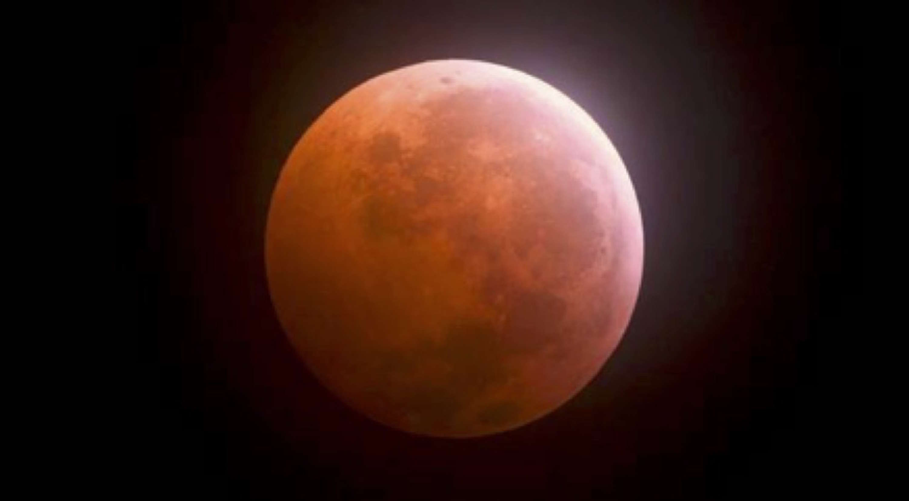
翌日、何も知らずに私が主催するセミナーのカフナコースに参加した人たちは、最初は私の腿に刻まれた大きな傷を見てショックを受けていましたが、奇跡の生還ストーリーを聴きながら、面白いように回復していく様子を一緒に楽しんでくれました。
しかし、それよりも私が驚いたのは、その後のセミナー参加者たちの素晴らしい成長でした。
ＨＤＣのプログラムに参加する人たちは、宇宙の流れに導かれた人たちです。紛れもなくこの世に愛を伝える伝道師として、これから活躍していく人たちが集まってきてくれます。
そんな予想通り、この２か月間にカフナコース、ラニコース、オラキノコース、マナコース、ロエアコース、そして極めつけはパワフルなセドナツアーとこなしていく間に、サナギが蝶になるように日に日にオーラの輝きが増して内側から美しく変わっていくみんなの様子を、いつもより確信を持って見ることができました。
改めて人間の内に眠る愛の深さを知るとともに、これからも、もっとたくさんの人の成長を見守っていきたいと思いました。
私は、あの運命の事故を境に、いままで疑問に思っていたことの答えが見つかりました。
自分の人生に何が起こっているのか最後の最後まで謎が解けなくても、何かを判断したり批判したり罰したりすることなく、いまこの瞬間を愛で満たしてすべてを手放せば、偉大なる大自然が本当に必要な流れを作ってくれることを確信しました。
すべては愛なのです。
私があの日イベントに参加したことも、そこで運命の大事故に巻き込まれたことも、その後のセミナーに間に合うように復活できたことも、いま、こうして事故の体験を皆さんとシェアしようと決意したことも、そして２年間大切に守り続けてきたＣＤプロジェクトをようやく解禁するお許しがでたのも、すべて宇宙の流れの中ではつながっていたことなのです。
過去に起こった、一見何のつながりもないように見えるひとつひとつの出来事が、未来で一本の線でつながり、やがてそれが夜空に輝く星座のように美しい形になっていくことを体験して、すべての出来事に意味があり、タイミングがあり、この世に無駄な体験は一つもないのだと改めて思います。
私は宗教家でもなく、哲学者でもなく、権力者でもありませんが、信念を持って自分の道を進んでいる愛にあふれる一人の人間です。
私の役割は、自分のまわりに愛を広め、世界中を愛で満たすこと。そして、実は皆さん一人ひとりも同じ役割が与えられています。
世の中を変えるのに、大金持ちになることや、有名になることや偉くなる必要はありません。
まず自分がしあわせになること。
そして、次に自分のまわりに愛を送ることができれば、その愛の輪が広がって世界中の波動を変えることになるのです。
『世の中には、偉大なことをするための偉大な人がいるわけではありません。普通の人が心からの愛を持ってできることをしたときに、それが偉大なことになるのです』
私の右脚に残された深い傷跡は、本当は私がすごいのではなく、この宇宙の創造主が偉大なのだということを思い出させてくれる神様からの刻印として、いつまでも大切にしていきたいと思います。
そして、これからも謙虚に愛を持って使命をまっとうしていきたいと思っています。
長い文章を最後まで読んでくださって、本当にありがとうございました。ご縁があってここにたどり着いてくださった皆さんに、心から感謝の気持ちを捧げます。
ここまで読んでくださった皆さんには、導かれたご縁に感謝し、宇宙の源から私に与えられたミラクル・ヒーリング（奇跡の癒しのパワー）を心を込めて送らせていただきます。
この遠隔ヒーリング・パワーを受け取るのに、何の条件も資格も必要ありません。ただ心から受け取りたいという意思を持つことだけです。もちろん、お金もかかりません。
見返りを求めない純粋な愛のエナジーは、純粋に望むことによって確実にその方のところに届きます。
また、自分だけではなく、大切なご家族やご友人にも届けてあげたいという意思をお持ちでしたら、相手の方が光で包まれている様子を思い描きながら、『○○さんにも癒しのパワーが届きますように』と純粋な気持ちで願ってください。
癒しは次元を超え、時空を超えて、国籍や年齢、性別、職業、貧富の差などに関係なく与えられるものです。
ミラクル・ヒーリングを受け取りたいか、受け取りたくないかはご自分の自由意志による選択です。
どうか心を開いてパワーを受け取り、いかなる時も挫けずに人生を前向きに進んでいってくださいね。
これからも私とともにたくさんの奇跡を体験していきましょう。
いつか皆さんに直接お会いできる日を楽しみにしています。
入院中から毎日天使が語ってくれた地球浄化のストーリーは、私の想像をはるかに超えた壮大な宇宙の計らいでした。
自分の思い込みが現実を創り上げると言われて自分の人生を振り返ってみると、いままでいかに自分が創り上げた小さな世界でもがいていたのかがよくわかりました。
天使と交わしたカジュアルな会話によって、私はもっと広い世界へ、もっと高い世界へとシフトさせてもらいましたが、この会話は、いまでも私の日常のセミナーや講演会で語らせていただくテーマの基本となっています。
今回、電子書籍として出版するにあたって、２０１４年のブログには載せることがなかった天使との会話集の中からいくつか選んで載せていただくことにしました。
入院中に自然に交わしていたとりとめもない日常会話ですから、同じ内容が重なっていることもありますし、私個人に対するやりとりなので、すべての人に向けて語りかけているわけではありませんが、純粋な天使の言葉として記録したものを削除せずにそのまま載せることにいたしました。
ここでも、私（レイア）の言葉は【Ｌ】、天使（エンジェル）の言葉は【Ａ】と記しています。テーマごとにわかりやすくまとめましたので、ぜひご覧になってください。
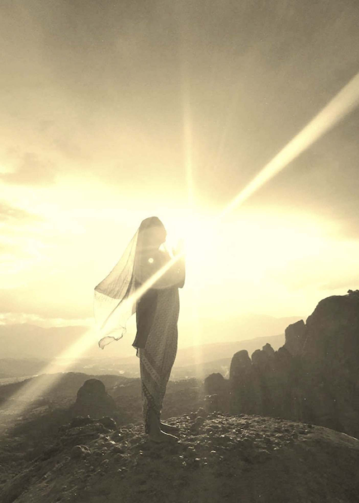
Ｌ『やることがたくさんあるのに、よりによってこんな忙しい時に病院に拘束されてしまうなんて......』
Ａ『忙しさは自分で作っているのですよ。やらなければいけないというのは思い込みなんです』
Ｌ『だって、現実問題として明後日はセドナなのよ。フライトも取ってあるし、私のために予定を立てて待っている人たちがいるのよ。これは紛れもない現実であって思い込じゃないわ』
Ａ『でも行けないでしょう？ 動けないほど大怪我していますから。どうしたらいいでしょうね』
Ｌ『......』
（約束が......、予定が......、責任が......）
Ａ『無理して何かをしようと考えずに、落ち着いて状況を受け入れるのです。いまという瞬間は、未来を創るための大切な時間です。だから、素晴らしい未来を創るために、いま、この瞬間にできることを心を込めてやるのです』
Ｌ『いま、この瞬間にできることっていっても、自分の体さえ思うように動かせないのよ。どこにも行けないし......。いったい何ができるというの？』
Ａ『まわりの状況や忙しさに振り回されてはいけません。
思い込みに囚われずに、今は自分を癒すための素晴らしいチャンスだということに気づきましょう。ヒーラー自身が真に癒されていなければ、他の人を癒すことはできませんから。
こんな事故がなければ、あなたは無理してでも時間を追いかけて、人のために行動しようとするでしょう。
時間は追いかけてはダメ。何でも追いかけると逃げてしまうものです。だから、いまは時間という概念を手放して、ここで真の癒しを体験することです。さあ、この瞬間だけに意識を集中して、いまのしあわせを感じてみましょう』
Ｌ『いま、この瞬間のしあわせ？』
（この状況の中での私のしあわせって、いったい何だろう......）
Ｌ『私の脚痛いけど......。腕も痛いけど......。予定がメチャクチャになっちゃったけど......。困ったことだらけなのに、それなのにしあわせを感じるの？』
Ａ『落ち着いて、胸の奥に響く鼓動に集中してみましょう。
ゆっくりと深く呼吸するのです』
Ｌ『鼓動......』
（ああ、暖かい......。胸の奥でドクッ、ドクッって動いている......）
Ｌ『いま、こうして生きていられることには感謝するわ。神経が痛みを感じさせてくれるから、そこが生きていることがわかる。細胞の一つ一つが私のために働いてくれていることも感じるわ』
（何か、忘れていたことを思い出している感覚......。何年振りかでゆっくりとしている感じ......。何だかとっても安らかな気持ちになってきた......）
Ｌ『いま、この瞬間に感じるのは、窓から降り注ぐ暖かな日差しと、呼吸している自分の身体だけなのね。何だかそれ以外は必要ないような気がしてきたわ』
Ａ『それでいいのですよ。しあわせは、状況ではなく、あなたの思いなのです。必要なものはすべてあなたの内にあるのです。あなたはすべて持っているのです。だから、何も心配しないでこの瞬間をじっくりと楽しみましょうね。
思い込みに囚われて時間を追いかけていると、愛に満たされた空間からどんどん離れてしまいます。あれもこれも抱えていたら、心にゆとりがなくなってストレスがたまるでしょう。
それは、心が散らかってしまった状態。いつも自分の回路はクリアーにしていなければいけません。どれだけ一人の時間を充実させることができるかで、他の人と過ごす時間がもっと充実したものになるのですから。
恋愛だって同じこと。二人でいる時間を充実させたかったら、まず自分一人の時間にしあわせを感じましょうね』
Ｌ『自分ひとりの時間にしあわせを感じるのね。何が起こっても、いま、この瞬間に感謝し、心からしあわせを感じることが大切なのね』
Ａ『そうですよ。そうすれば、自分が悩んだり困ったりしていたことが、本当はとても小さなことだってことがわかります。そしてこれから起こることのすべてが良い方向に流れていくことを体験できますよ』
Ｌ『よく考えてみれば、こんな時でないと、一人の時間をじっくりと味わうことができなかったわね。いまこうして病院にいれば、日々のわずらわしい人間関係には関わらなくていいから、気が軽いわ』
Ａ『人間関係って煩わしいですか？ あなたは、人は自分の鏡だって知っているでしょう。人は出会いを通して自分と出会うのです。すべての出会いは自分が何者であるかを見せてくれる鏡だから、相手の輝きを見つけることができる人は、自分も輝いているのです。逆に相手の嫌な面ばかり目につくときには、自分の中にネガティブな思いがあるということなのですよ』
Ｌ『そんなこと言っても、どんなに良い面だけを見ようと思っても世の中には嫌な人や悪い人もいるんじゃないの？』
Ａ『いませんよ。あなたが、嫌だと感じている人や、悪いと感じている人がいるだけです』
Ｌ『だって、世にはびこるネガティブな波動は悪で、それは罪だって言ったんじゃなかったかしら？』
Ａ『罪というのは、判断する心や人を恨む気持ち、憎む気持ちが重い波動となって世の中に蔓延していくことを言っているのです」
Ｌ『じゃあ、殺人を犯す人とか、人を平気で騙したり傷つけたり裏切ったりする人は罪をいっぱい持った悪い人でしょう？』
Ａ『そのように、人はこうあるべきだと決めてしまうところに苦しみが生まれるのです。判断というのは、あなたに善悪を見せてくれたり、人生を教えてくれる人たちのことを、あなたがどう見るか、どう感じるかということですよ。
たとえば、テロリストを英雄として見ている人がいたり、ヒットラーを尊敬する人だっているのです。マザーテレサのことを偽善者だという人もいるし、みんなそれぞれの思い込みで人や状況を判断しているのです。そして、自分と価値観や判断が違う人との間に戦争が起こったりするわけです。そこには、『愛』ではなく『恐怖』が生まれ、『罪』がはびこるだけです。
ですから、宗教や政治によってコントロールされた常識ではなく、まずは、すべてのものの中に美しさを見ることができる美しい心が大切なのです。そのうえで、人を判断せず、中道の見方で受け入れてごらんなさい。そうすれば、そこにある優しさだとか、温かさが見えてきます。世界中のみんながお互いの輝きを認め合うことができたら、この世はもっと平和になるのですよ』
Ｌ『そう言われても、やっぱりヒットラーは悪い奴だと思うわ。無差別にたくさんの罪もない人たちを殺したのよ。「アンネの日記」を読んでごらん。悲しいから』
Ａ『あなたは、ヒットラーに会ったことありますか？』
Ｌ『直接会ったことはないけど......。でも、写真や映画で見たことあるし、アウシュビッツ収容所の悲惨なストーリーは世界中で語られているわ。パリに住む私のお友達のお父様は、アウシュビッツの生き残りだったの。だから、直接体験談を聞いたことがあるのよ』
Ａ『日本に投下された原爆のことや、奴隷として売られた黒人達の話など、歴史の中で何が起こったかを知ることは大切です。でもね、人間のフィルターをかけて、怒りや悲しみの感情を交えて書かれた書物や映像だけで物事を判断してはいけません。この世に起ることのすべては、人類の進化のための重要な出来事で、あなたがしあわせになるための体験なのです』
Ｌ『しあわせになるためなのに、何で醜いことや残酷なことを体験しなくちゃいけないの？』
Ａ『悲しい出来事は、二度と繰り返してはいけないという貴重な教えだし、体験から人は人を殺してはいけないし、裁いてもいけないということがわかれば魂は成長するでしょう。しかし、人間は何度も何度も過ちを繰り返し続けるから、いつまでたっても争いが終わらないのです』
Ｌ『同じ過ちを繰り返す人間って、愚かよね』
Ａ『いいえ、人間は素晴らしいですよ』
Ｌ『いま、人間は何度も同じ過ちを繰り返すから成長しないんだって言ったじゃない？』
Ａ『そうですね。でも、何事も自分の怒りや悲しみの感情を交えて判断しないことって教えたでしょう？ この世には愚かなことなんてないし、愚かな人もいないことがわかれば、自分が創り上げた現実を変えることができるのですよ。
人間はね、この地球において唯一、神様の一部として魂の成長のために修行を続けている素晴らしい存在なのです。
植物も、他の動物たちも神様の一部として存在しているけれど、人間とは別の使命を持って、人類の魂の成長を助けてくれています。
この宇宙のバランスを保つためには、この世に存在するすべてが貴重なのですが、その中でも、魂の成長という大切なお役目をいただいてこの世に生を受けた人間は尊いのです』
Ｌ『尊い人間の命を奪う殺人鬼は、どうして尊いの？』
Ａ『人は自分の鏡だと言ったでしょう。人類の進化は共同作業ですから、自分が体験したくないことや苦しくて耐えられないことを、自分に代って体験してくれる人がいるのです。
たとえば、人間が自然災害と呼んでいる地球の叫びがありますね。そこに巻き込まれて亡くなった方や家を失くした方は、あなたの代わりにその体験をしてくれているのですよ。ですから、自分が体験したのと同じように感じて、その体験を通して、慈悲の心や愛を学ばなければなりません。
災害に巻き込まれた人々のことは今生の記憶では直接知らない人かもしれなないけれど、自分の鏡としてつながっているのです。すべてはひとつですから』
（すべてはひとつ......）
Ｌ『私、何があっても虐殺なんてしたくないし、世の中からそういうことがなくなるように願っているのに。なぜ人が人の命を奪わなければならないの？ なぜ愛と優しさだけでは学べないの？』
Ａ『この世界は人々の放つ波動によって現実が創られていくので、世界中に重い波動が増えれば、本来の生まれてきた目的から外れてしまう人も現われるのです。
エゴや欲にコントロールされて愛から遠ざかり、殺人鬼の行動をしてしまう人もいるのですよ。たいていの場合、犯罪と呼ばれている行動は愛の欠如から生まれるものです。
満たされない気持ちが、人を傷つける行為となってしまうのです。
あなたは、それを知って、見て、感じて、そして赦しましょう。そして、それに関わって苦しむ人たちを癒しましょう。
傷ついた魂を癒して、無償の愛で包むのです。あなたが悪い奴だと思っている相手のことも赦すのですよ。
それが愛です。赦せた時、あなたは愛に包まれ苦しみから解放されて自由になります。赦しは、人類の歴史の中で乗り越えなくてはならない課題のひとつです』
(う〜ん。言ってることはよ〜くわかるんだけど......。現実問題としては、多くの傷ついた人たちにとって愛と赦しは難しいと思うわ)
Ｌ『人を苦しめたり陥れたり、奪ったり虐待する人を赦して愛するっていうのは、そんなに簡単にできることじゃないと思う......』
Ａ『それでも赦すのです。それでも愛するのです。悲しみや怒りをすべて光に変えて、愛で満たすのです』
Ｌ『どうやって？』
Ａ『たしかに、赦すことは難しいことかもしれません。それは、人間にとっての課題の一つですから。イエス・キリストも、仏陀も、この世に存在していた時には愛と赦しの真理を説いていましたが、なかなかうまく伝えられなかったようです。
人は赦すとき自由になります。
自由になるためには、まず出来事に対して「恐怖」という幻影を持つことで、その出来事に力を与えてはいけないのだということを忘れないようにしましょう。それを忘れなければ、少しずつ理解できるようになっていくことでしょう』
Ｌ『私は、自分ではかなり赦せるようになっているつもりだけど、そして、赦すことができる人たちをもっともっと増やせたらいいなって願っているけれど、私に何ができるのかしら』
Ａ『まず、自分自身を癒すことです。それによってあなたの周波数が上がります。周波数があがると、新たな扉が開いて、「偉大な癒しのパワー」というギフトを授かるのです。それが世の中のためになることは自然にわかるでしょう。
あなたは、純粋で、誰よりも赦し、誰よりも愛する心を持っています。内側から美しい輝きを放っています。信念を持って愛を貫き通す姿勢は素晴らしいです。私たちはいつもあなたに感謝していますよ。だから、そんな自分を認めて、信じてあげましょう』
Ｌ『感謝だなんて......。私がやっていることを認めてくれて、ありがとう』
（戦争や殺人や飢餓が蔓延している世の中に怒りを感じているけど、暖かな愛の言葉で褒められると素直に気持ちが楽になったような気がするわ。なんとなく、いろいろなことが赦せて愛せる気になったかも）
Ａ『人はみな、自分を認めてもらうことで本当の自分の輝きに気づくものなのです。だから、あなたが情熱を持って人々の内にある魂の輝きを認めて、眠っている愛を引き出して磨いてあげなさい。あなたの存在は、人類にとってとても重要なんだってことをいつも思い出しなさい』
Ｌ『一人ひとりの存在が重要だってことね』
Ａ『すべての人が存在しているだけで価値があります。ですから、まずそんな素晴らしい自分自身を認めてあげましょう。そのためには、心の傷や疲れを癒すことです。
深い眠りは肉体を癒し、優しい言葉は心を癒します。癒されていれば、他の人も自分と同じように尊いことがわかります。今日はゆっくり休んでくださいね』
Ｌ『その言葉でなんだか今日は安らかに眠れそうな気がします。
たくさんお話してくれてありがとう。おやすみ......』
Ａ『おやすみなさい。では、また夢で逢いましょうね』
Ｌ『えっ？ 夢の中まで追いかけてくるの？』
Ａ『そうですよ。この機会に整理整頓してダウンロードしてもらわないといけない宇宙の真理が、たくさんありますからね』
Ｌ『......』
Ｌ『ねえ、多くの人が時間に追われる毎日を送っているような気がするんだけど、良い時間の使い方を知る方法ってあるのかしら』
Ａ『いまは徐々に地球の時間の流れが速くなっていますから、人間として肉体に宿っている間は、タイムマネージメントが大切です』
Ｌ『あ、それ知りたいわ。私は時間の使い方が下手なの。いつも目の前の事に真剣に取り組んでしまうから、気がつくとあっという間に時間が過ぎてしまうの。だから、約束には遅れてしまうし、原稿の締め切りには間に合わないし、楽しいことがあると無駄に時間を使ってしまうし......』
Ａ『楽しいことに時間を使うことは決して無駄ではありません。あなたは素晴らしい時間の使い方をしています。とっても自然に生きているし。でも、世の中にはあなたのような時間の使い方がわからない人がたくさんいます』
Ｌ『えっ？ どういうこと？』
Ａ『タイムマネージメントというのは、心から楽しめることや本当にやりたいと思うことに時間を費やせるようになるということです。それが生き甲斐やしあわせにつながる正しい時間の使い方だと気づくことなのですよ』
Ｌ『それはそうだけど、みんなが自分の好きなことばかりやっていたら、世の中メチャメチャになっちゃうんじゃないの？』
Ａ『なりませんよ。もしみんなが自分の仕事を楽しみながらやったり、やりたいと思った勉強を楽しんでしていたら、みんながハッピーで、生産性も上がるし、良いものが生まれることでしょう。一人ひとりが自分の好きなことをして自分をしあわせにすることができたら、世界中のみんながしあわせになれるということです』
Ｌ『ちょっと待って。私は嫌だけど無理してやっていることがたくさんあるわよ。人に会うのは嫌いだし、お掃除だって苦手だし、できれば働かないでゴロゴロしていたいし......。でも、我慢してやっているのよ』
Ａ『フフッ、自分の心に素直になってごらんなさい。本当の自分を見つめてみるの。あなたは、いつだって誰かと出会うことにワクワクドキドキしているでしょう。自分に関わったみんなのこと、誰よりも愛して誰よりも心配して、誰よりも見守っているでしょう。
人に会いたくないという時は、直感で人の心が読めてしまうから、打算や欲得で近づいてくる人と無駄な時間を過ごしたくないということですよね。そういう波動の低い人と一緒にいると疲れてしまいますからね。それなのにノーと言えなくて、そんな人をいっぱい引き寄せてしまうのは、これからのあなたの課題ですけれど。でも、それ以上に良い人たちもたくさん集まってくることを体験していますよね。
お掃除は、他の誰よりも細かいところまで気づいて、徹底して磨いていないと気が済まないから途中で疲れてしまうだけでしょう。あなたの気のつき方はすごいと思います。誰も見ていない扉の裏側まで磨いているじゃないのですか。
そして、お金儲けなんて考えなくても、宣伝したり告知したりしないのに、ちゃんと好きなことをしながら豊かな生活を送っていられるのは、あなたがギフトを活かしているからですよ。
あなたはいつも、受け取る報酬以上の素晴らしい価値を人々に与えたいと思っていますから、宇宙の法則によって、豊かさのエナジーは決してなくなりません。あなたは、宇宙の法則を実践している自然体の人なんです。我慢してやっているって言いながらも、人生のすべてを楽しめる人なのですよ』
Ｌ『じゃあ、私はこのままでいいってことなのね。時間に遅れたり、予定をキャンセルしたりした時には、いつもとても心苦しかったのよ』
Ａ『責任感を持つことは大切ですが、人に迷惑をかけてはいけないと思って、無理をして、寝る間もなくご飯も食べないで動いてばかりいたら、心も身体も疲れ切って力尽きてしまいます。
申し訳ないという気持ちならば、まずは心から謝ることです。そして、心にゆとりを持って、できることを心を込めてやることです。そうすれば、無理をするよりももっと良い結果が出せるので、最終的には、みんなが悦びを分かち合えるようになることでしょう』
Ｌ『世の中には、嫌々ながら学校に行ったり、何の目的もなく仕事している人たちは多いけど、どうすればみんな自由に自分の好きなことができるようになるのかしら？』
Ａ『そうですね。自由に羽ばたくためには、まずグラウンディングをすることです。魂をシフトさせるためには、フワフワした目に見えない世界の理屈を学ぶことよりも、何事にも動じない心、まわりの人の意見や状況に振り回されない不動の心を持つことがとても大切です』
Ｌ『ちゃんとグラウンディングのできていない人が多いものね』
Ａ『それから、何度も言っていますが、自分が感じること、考えることが自分の世界を創るんだということに気づくことですね。起こっている状況は同じでも、それを自分がどう受け止めるかで、しあわせを感じたり、悲しみを感じたり、傷ついたりするのが人間の性なのです。
たとえば、いまのあなたの状況は、「事故にあって、怪我をして、病院に搬送された」ということですけれど、「何も悪いことをしていないのに悲惨な大事故に巻き込まれ、大怪我をして体の自由を奪われ、歩くこともできずに苦痛の中でのた打ち回りながらベッドの上に縛りつけられている」とも言えるし、「宇宙からの愛によって、自分の使命に気づくチャンスを与えられ、私たち天使と人類のしあわせのために愛の対話を楽しんでいる」とも言えるわけです。
同じ体験でも捉え方が違うとまったく別物になってしまいますよね。それは、心無い人の噂話が耳に入ったときも同じですし、自分が否定されるような出来事があったり、人に騙されたり裏切られたりした時も同じです。それを自分がどう受け止めるかだけの問題。世の中には、良い人も悪い人もいないし、良いことも悪いこともないのだということを思い出しましょう。
自分の体験は、すべて自分の想いが創り上げている幻想です。ですから、良い幻想を創ることができれば自然に道が見えてきて、結果自分の望んだ未来を引き寄せることができるのですよ。夢や目標というのは、今の自分の在り方によって生まれてくるものです』
Ｌ『人は誰でもちょっとしたまわりの状況や言葉で傷つくことってあるし、悲しいことや苦しいことで心が沈んでしまうこともあるわよね。それをコントロールするにはどうしたらいいの？』
Ａ『人間に生まれてきた以上は、喜怒哀楽の感情があって当たり前です。感情は魂のバロメーターですから、それを抑える必要はありません。コントロールしようと思う必要はないのです。
ただ、情報の受け取り方と開放の仕方の訓練は必要です。つまり、一つの感情だけに捕らわれないで、いろいろな角度からものを見るということと、自分を苦しめる感情はすばやく手放すということです。
そして、自分の体験が成長のための素晴らしいものであると気づくことです。どんなことが起こっても、そこに感謝の気持ちを持てるようになりましょう。汚れた波動の中にいても高い周波数を保っていられるようになったら、心は自由になれますから』
（感情に捕らわれないって言ってもねぇ〜。人間だものねぇ〜）
Ｌ『辛い時に感謝の気持ちを持つにはどうしたらいいの？』
Ａ『ですから、グラウンディングをすることです』
Ｌ『泥沼の中に咲く蓮の花っていうのは私のポリシーだから、いつも、みんなにグラウンディングが大切だって伝えているんだけど、みんなグラウンディングって何だかわかっていないみたいなの。どうやって説明したらいいかしら？』
Ａ『グラウンディングというのは、エナジーが地球とつながっていることです。大木が深く大地に根ざしているように、自分の現実をしっかりと受け止め、何事があってもゆるぎないどっしりとした状態でいることです。
グラウンディングができていると心が安定しますから、小さなことでくよくよしたり、感情の波に飲まれたりすることなくしあわせを感じることができるようになります。そして、心が安定していると直感が鋭くなって高い波動を引き寄せるようになりますから、理想を現実化することができるようになりますね』
Ｌ『つまり、いつもグラウンディングができている状態で高い周波数を保っていれば、夢が叶うって言うことよね。その方法をみんなに教えてあげたいな〜』
Ａ『あなたは、いままでそうやっていつも苦しい体験を乗り越えてきたでしょう。グラウンディングは何よりも大切ですから、誰もが理解できるように具体的な例をあげながら自然にグラウンディングが身につくような方法をみんなに伝えてあげれば良いでしょうね』
Ｌ『そうよね。日本中の人がしあわせになるためのグラウンディング・ワークショップ、必ず開催するわね。またワクワクしてきたわ』
Ｌ『神様には感情とか性格があるの？』
Ａ『正確に言うとその質問は宇宙の成り立ちに対して的を射ていないので、説明するにはまず宇宙とは何か、神とは何かを理解してもらわないといけないのですが、まず誰もが理解できる範囲で答えるとしたら、神様にも感情や性格がありますよ。
神様は、すべての感情を持っています。そして同時にすべての感情を超えています。神様は、愛１００パーセントなのです。その１００パーセントの愛というのは、苦しみも、悲しみも、恨みも憎しみもすべてを超えた純粋なエナジーなのです。神様は、自分の分身である人間たちを通して人間が体験するすべての感情を味わって、それを超えた偉大なる愛を放出し続けているのですよ』
Ｌ『私は、よく「神様ってどこにいるの？」って聞かれるのよ。
みんな、神は自分の内にあるっていう感覚がわからないみたいで、どこかに探そうとしている人が多いのよ』
Ａ『そうですね。宇宙や神様については、自分の内側を見つめればすべての答えが見つかります。でも、それを理解するには、自分が何者であるかに気づかなければなりませんね』
Ｌ『私は、神様が何であるかという理屈を探求するよりも、みんながしあわせになるにはどうしたらいいかに興味があるのだけれど。それがわかれば、神様のことも理解できるんじゃないかしら』
Ａ『それでは、みんながしあわせになるために、まずあなたの心の中を整理するつもりで、どうしたら良いのか具体的に言葉にしてみたらどうでしょう』
Ｌ『そうねえ、そのことについてはいつも考えているからいっぱいありすぎて何から伝えたらよいのかわからないけど、順番関係なく心に浮かぶ事をそのまま言ってみるわね。
まず、思い込みを捨てること。
人の噂に耳を貸さないこと。
人や状況をコントロールしないこと。
人と自分を比べないこと。
悪口は言わないこと。
グラウンディングをすること。
どんな時も一人ぼっちじゃないってことを知ること。
自分勝手にネガティブな幻想を創り上げないこと。
信念を持つこと。
恐怖に基づいた選択はせず、つねに愛に基づいた選択をすること。
自分の心地よいと感じる場所から一歩踏み出す勇気を持つこと。
自分を信じること、そして自分を愛すること。
他の人も自分と同じように愛すること。
答えは自分の中にあることに気づくこと。
すべては意味のあることだと知ること。
世界は、次元を超えて愛で一つにつながっていることを知ること。
もっともっと、どんどん出てきて止まらなくなっちゃったわ。......ちょっと待って！ これって、私がいつもセミナーで説いていることばかりじゃないかしら』
Ａ『気がつきましたね。そう、その通りです。あなたは、神様の意思に基づいて私たち天使が伝えようとしていることを、ずっと人間界で代弁してくれています。そして、その宇宙の法則を誰もが理解し、実感して実践できるように、大自然とつながりながら一人ひとり丁寧に導いてあげているでしょう。それって、ものすごい忍耐力が必要なことですよ。もう少しでシフトしそうなところで挫けてしまう人たちが多い中、最後の最後まで見捨てずに相手のことを考えてあげている姿は、見ていると感動しますよ』
（そうなんだ......。天使も感動するのね......）
Ｌ『私のやっていることって、このままで良いのね。私は導かれていて見守られているのね。心をクリアーにしてくれてありがとう。改めて、自分の道を信念を持って進む勇気をもらったわ』
Ｌ『何冊ものしあわせになるための本が出版されてベストセラーになっていて、いくつもの成功するためのセミナーがあって何千人も受講しているのに、なんでしあわせじゃない人が大勢いるのかしらね』
Ａ『本当は、答えはとてもシンプルなのです。人間が創ったものはたえず変化します。誰かの説が覆されたり、新しい解釈が生まれたりします。そしてどちらが正しいかという論争が始まり、また変化していきます。人は一人ひとり違った波動を持っていますから、その変化に応じて、臨機応変に自分に必要な情報を取り入れていくことが大切です。でも、神様が創ったものは永遠に変化しません。ですから、心はいつもそれだけに集中していれば自然に導かれます。その永遠に変わらないものというのは愛です。
愛がわかればしあわせになります。ちょっと難しいかもしれませんが、理屈で考えなくて良いのです。いずれ、肉体を離れた時に自然にわかりますから』
Ｌ『肉体を離れた時に自然に答えがわかるのなら、何でわざわざ人間としてそれを探さなければならないの？ 魂の世界で愛に浸っていれば、悲しい事も苦しいことも体験しなくていいんでしょ。そこにいれば、すべての答えがわかるんでしょ？』
Ａ『神様が創った宇宙は私たちと共に進化しています。愛だけの世界を知るためには、愛以外の世界の中での体験が必要なのです。その体験を通して魂は成長し、進化します。つまり、神様は人間を通して進化の行程を体験しているということです』
（う〜ん、心の奥ではすべてわかっているような気がするんだけど......。どうやって人に説明してあげればいいかしら......）
Ｌ『いま、神様が創ったものは永遠に変わらないっていったんじゃなかった？ 進化って、変化じゃないの？』
Ａ『愛そのものは永遠に変わりません。自然界の成り立ちは愛に基づいてバランスを保っていますから、自然界が自然に移り変わっていくという事実も変わりません』
Ｌ『哲学者みたいな、そんな理屈をどうやって人に説明したらいいの？ みんなもっと混乱しちゃうと思うわよ』
Ａ『理屈ではなく真理です。それを理屈で説明する必要はありません。頭で考えては理解できません。体験することによってのみ真理にたどり着きます。そして、答えはすべて自分の内にあることがわかるのです。人間が体験する人生の歩みが、この宇宙を創る重要な役割を担っています。
神様は愛で、愛は命です。命は進化の過程で新しい生命を生み出し、さらに進化し続けます。進化するためには魂が成長することが必要で、魂が成長するためには、愛を知るための体験が必要なのです。いろいろな角度から愛を体験するために、神様は自分の一部を人間として地上に降ろされたのですから』
Ｌ『つまり、私たちは、いろいろな体験をしながら神様と一緒に宇宙を創っているのね。人間はそのためにこの世に生まれてきたっていうことかしら』
Ａ『そうですね。人はみな、愛を体験し愛を知るためにこの世に生まれてきたと言えば少しはわかるかもしれませんね。人が生まれてきた目的はたったひとつ、魂の成長のためです。そして、魂が成長してよりしあわせになることです。愛を体験し、愛を実践する度に少しずつ魂が成長して、最終的には愛に戻ることになります。
それが、神様に近づくということ。言い方を変えれば、成長しながら本当の自分に戻るということです。その進化の行程が宇宙を創造していくのです。わかりますか？』
Ｌ『とっても良くわかります。でも、それをわからない人にどうやって伝えれば良いのかわかりません』
Ａ『私たち天使は、宇宙の進化を助けるために、愛の源と人間界を行き来しながら見守るお役目をいただいているので、あなたのような愛の使者をサポートしています。あなたは、自分の好きなように自信を持って進みなさい』
Ｌ『他の人の成長を助けるためには、みんなの目線で、みんなのレベルで愛を語れって言ってたわよね。難しいハウツーの手引書を解説するのではなく、私の人間としての失敗や喜びの体験を素直に伝えれば、みんなはそこに愛を見ることができるかしら』
Ａ『それは大切なことですね。何かの本に書いてあったことをただ暗記して知識として伝えても、実際には何も役に立ちません。自分で体験して理解したことを伝えましょうね』
Ｌ『なんだか、私の信念を貫きたいって思って燃えてきちゃったわ。これが情熱っていうものなのよね』
Ｌ『人間界では、本音で純粋なエナジーを交換してくれる人が少ないけど、天使たちからは、いろんなことが学べて楽しいわ』
Ａ『それは良かったです。あなたは、私たちに代わって、神様からのお導きを直接人々に伝えることができますから、他の人にとってはあなたの言葉が天使の言葉になるのですよ。
ですから、真理を伝えることに躊躇してはいけません。あなたの後ろには、たくさんの大いなる存在が見守っています。私たちはあなたが生まれた時から、いえ、それよりももっと前からいつも一緒にこの道を歩んでいるのですよ』
Ｌ『いつも、ずっと傍にいてくれたのね。ありがとう。たまにしか気づかなくてごめんさないね。ねえ、他の人にもそれぞれ天使がついてくれているんでしょ？ だったら、何で他の人には天使が見えないんだろう？ みんながこうやって対話できたらいいのに』
Ａ『見える人もいますよ。感覚としてなんとなく感じるだけの人もいます。メッセージを聴いてくれる人もいます。
ただ、何も見えないのに見えていると言って世の中を混乱させる人も大勢いますし、スピリチュアル産業などと言って、見えない世界をビジネスにしてしまう人もいますから、私たちの存在を証明することが難しくなってしまったのです。
愛の世界は、見返りを求めない純粋な心があれば誰でも繋がる事ができるのですよ。周波数の合わせ方の問題ですから。本当はシンプルなのですが、現実の生活で、不安や恐れに捕らわれてしまったり、心配したり疑ったりすることで回路が閉じてしまう人が多いのです』
Ｌ『じゃあ、見えない世界の事に興味があるけれど、何も感じないって思っている人には、どうやって指導したらいいの？』
Ａ『教科書を読んだり、頭で考えないと理解しにくいタイプの人もいますけど、そういう人は回路を開くことが難しいですね。誰でも一番わかりやすい方法としては、自分の肉体を知ることです。肉体は小宇宙だということに気づいて、身体と対話することです。血液の流れ、筋肉、神経、内臓の働き......。宇宙の神秘のすべてが人間の肉体の中にあることがわかるでしょう。それは、あなたがいつも伝えていることじゃないかしら』
Ｌ『いつも伝えているからこそ、より良い指導法があったら知りたいなって思って』
Ａ『あなたは宇宙の法則を、余分な知識やフィルターを通さずに純粋に伝えていますから、そのままで良いのです。あえて確認をしたいのであれば、いま、ここで一緒に復習しておきましょうか』
（嬉しい......。宇宙の真理にたどり着く方法をわかりやすく伝えられたらみんなしあわせになるだろうな......）
Ａ『宇宙を知るためには、肉体を知ることだと言いましたけど、そのためには、呼吸を意識して細胞のひとつひとつとつながることです。まず腸をきれいにして命の源につながる回路を開くことからスタートしましょう。魂が宿る神殿である肉体の回路が開いていないと、エナジーは流れませんから。腸をきれいにしたら、次には血液の流れに集中して、体温を感じて、肺を意識してゆっくりと深く呼吸して、体中の神経に意識を集中してみましょう。
背骨の内側に流れる生命エナジーを感じ取れるようになったらかなりいい感じです。あなたは、常日頃からそれらを詳しく指導していますから、それで良いのですよ。
他に大切なのは、大自然の中で、大地や植物や鉱物の鼓動を感じることです。大自然の一部としての自分の肉体と対話する事ができたら、いろいろな存在とつながることができるようになります。それも、あなたはとってもわかりやすく指導していますよね。
あなたは、宇宙と直接つながってメッセージを降ろすことができる数少ない存在ですから、その調子で、これからも、一人でも多くの方の覚醒をお手伝いしてあげてくださいね』
（私がプログラムの中でやっていることは、本当に宇宙の源から届けられた愛の教えだっていうことを魂レベルで感じるわ。この悦びは、何かしら？ 認められた喜び？ それとも奉仕の心？ 何だかわからないけど自分が何層も上までたどり着いていくような感覚......）
Ｌ『わかったわ。私がいつもやっているプログラムで良いのね。これからも、挫けずに続けていくわ。でも、宇宙のことは、きっと皆に説明してもわからないかもしれないわね。科学的、物理学的、天文学的に証明できることしか信じることができないと思い込んでいる人たちが多いからね』
Ａ『まだ人類は、多次元世界のことや、他の星のことなど、話しても理解できないと思います。いろいろなことが理解できるようになるためには、もう少し時間がかかるでしょうね。科学の発展も人類の進化の行程の一つとして大切なことですが、もっと大切なことは、一人ひとりがどうやってしあわせになるかということです。それがわかれば、もっと多くの人が私たちとつながることができます。
地球は有機体で、生きているということはみんな知っているはずなのに、海は汚染され、空気も汚染され、自然は破壊され、人類同士が戦っているのは悲しいことです。それを愛に基づいて進化させる方法は、一人ひとりの魂が成長することしかないのですから』
Ｌ『私にもっとできることがあるかしら。魂レベルではすべてわかっているんだけど、人に説明する時には、もっとうまく伝えたいわ』
Ａ『心配しないで。あなたにすべての答えをダウンロードしますから。あなたは、それを自分の言葉で人々に伝えましょう。愛のこもった言葉は氷を溶かし、すべての壁を取り去って、魂に届きます。愛の使者として、これからもあなたはあなたらしくいてくださいね』
Ｌ『わかったわ。私、宇宙の真理についてとか、神様や天使についてとか、魂についてとか、これからみんなにもっともっと色んなことを伝えたいわ』
Ａ『伝えましょう。大丈夫です。私たちがお手伝いしますから』
事故のときに私を襲ったネガティブな波動が最近、地球のあちこちに出現しています。
ここで、一人でも多くの人に目覚めていただくために、負のスパイラルがこの世にもたらす影響について補足しておきましょう。
経済的な不安、病気、人間関係のもつれ、仕事への不満、孤独感、喪失感、絶望感、傷ついた心、憎しみ、嫉妬、悲しみ、後悔......こういった感情が人間の心に芽生えると、自分自身を心の闇に引き込むだけではなくネガティブな波動は外に向かって放出されます。
みんなが放った無意識の感情はそれ自体が生命力を持って同じ周波数同士で磁石のように引き合い、力を与え合ってどんどん増殖していきます。そして身近にいる人の心の隙間に襲いかかるのです。
同じ波動どうしが集まって増殖するといった現象は、ネガティブな波動だけに限ったことではなく、喜び、感動、しあわせ、愛......といったようなポジティブな波動もやはり同じように惹きつけあって大きく広がります。
そして、ポジティブな波動は、ネガティブな波動に獲り込まれそうになってしまう人々を愛の波動で包み、救ってくれるのです。
でも、最近は世界中でネガティブな波動のほうが大きく広がりすぎてしまい、ポジティブな波動が足りない状態が続いています。
ここ数年、以前よりも鬱病や自律神経失調症、心身症、神経症など精神的にバランスを崩す人が増えていることはご存じでしょう。
自覚症状がない人も含めるとかなりの数に上ります。
バランスを崩した人はネガティブな波動の影響でいつの間にか心を閉じてしまい、ポジティブな波動を受け取ることを自ら拒否してしまうためになかなか治りません。
エナジーが見える人ならば、ネガティブな波動を持った人のオーラは、輝きが失せ、暗く淀んでいるのがわかります。
その人の周辺が大きな闇に包まれ、自分ではコントロールできないほどになってしまうと、家族、友人を巻き込んでどんどん広がっていく状況が見えると思います。
そして、実はこのように人々の無意識の心の闇がもたらす重い波動が、この世に戦争、災害、凶悪犯罪を引き起こす原動力となっているのです。
まったく無意識ですから恐ろしいです。
自分には関係がない、自分ではどうすることもできないと思っている自然災害でさえも、実は私たち一人ひとりのネガティブな波動が大きな要因となっていることを自覚している人は少ないでしょう。
それは、悪いことをした人を裁くとか、過去のカルマが罰を与えていると言った考え方とは少し違います。
ごく普通の人のごく普通の日常に起こっているエナジーの流れを説明しているだけです。
ネガティブな波動が大きくなると、すべてが不安になり、自信をなくし、夢や希望が遠のいていきます。愛にあふれた人の言葉も耳に入らなくなり、やがて体調を崩します。
そして、体調を崩すと心が崩れ、心が崩れると増々体調が崩れるという事を繰り返すうちに、深い闇の底に落ちていきます。
自分自身が崩壊するだけではなく、まわりを巻き込んで無意識のうちに地上に毒素をまき散らすことになってしまうのです。
最も危険なのは、罪もない人々から無意識に放たれたそういった負の波動はそれよりもっと大きな裏切りや憎しみなどの邪悪な波動の餌となって増殖し、地球に大きなストレスを与えてしまうことです。
すると地球は毒を吐き出すために、自然災害を起こします。
だから、自然災害を減らすためには、何があっても自己否定をしたり落ち込んではダメなんです。
誤解されないようにもう一度言っておきますが、負のスパイラルにはまり込んだ人が悪い人であるということではありません。
欲や憎しみにまみれた邪悪な波動と、負のスパイラルにはまった人が無意識に放つ負の波動の質は少し違います。
心のきれいな人や思いやりに溢れる人ほど、人のことを考えて自分を抑え込み、いつの間にか抱えきれない苦しみを背負ってしまうことが多いのです。
でも、優しい人が無意識に発する悲しみの波動が、故意に人を傷つけたり裏切ったりする汚れた波動に力を与えてしまうことは事実です。
人生、いったん何かで落ち込んでしまうと、そこから立ち直ることは難しいかもしれません。
しかし、どんな状況になっても自分の内に輝く愛を思い出すことだけが負のスパイラルから抜け出す唯一の方法です。
自分が放つエナジーがポジティブでなければ、しあわせはやって来ません。そして、自分をポジティブに変えることができるのは、他ならぬ自分しかいないのです。
与えられたものに感謝し、
自分を愛し許し、
人を愛し許し、
無限の可能性を信じ、
夢を持って前向きに進んでいくこと。
たとえどんなことがあっても投げやりになったり、不幸を人のせいにしたり、途中であきらめたりしないこと。
強くなることです。
それを忘れないで、神様から与えられた大切な命を慈しみ、愛おしみ、輝かせてください。
そうすれば、自分が幸せになるばかりではなく、この地球は愛で満たされ、世界中に平和と安らぎが訪れます。一人一人がもっと幸せになることが、この地球を救うことになるのです。
ですから、今日から、いまから、この瞬間から、まずあなたが幸せになりましょう。
どうしたら良いかわからなかったら、ガーディアン・エンジェルからの愛のメッセージを聞いてください。
必ずあなたの魂の言葉が導いてくれます。
〜心から愛を込めて〜
レイア高橋
＊ この文章は、２０１４年のブログに「番外編【負のスパイラル】」と題して掲載したものです。
レイア高橋 Leia Takahashi
ハワイアン・ドリーム・クリエイションズ（ＨＤＣ）代表。
ハワイを拠点に、ヒーリング・セラピストとして活躍。「ロミロミ」の伝統的スタイル（マナヴァヒ・スタイル）のカフ（継承者）として、ハワイに古くから伝わる生き方の哲学「フナの教え」に基づいた質の高い教育プログラムを提供している。
古代ハワイアンの歴史や文化をはじめ、浄化のための瞑想法、呼吸法、チャント詠唱法などを伝えるほか、世界各地で聖地ツアーを主催。地元ハワイの教育テレビ番組で古代ハワイ文化のスピリチュアリティを伝える講師として活躍するなど、心と体の癒しを求めるすべての人に愛のエナジーを送り続けている。
著書に『癒しのパワースポット』シリーズ、『フラ・カヒコ 魂の旅路』（いずれもアールズ出版）、『宇宙に愛される幸運エナジーの法則』（ＷＡＶＥ出版）、『ハワイ式腸のマッサージ』（ＫＫベストセラーズ）などがある。
https://www.aloha-hdc.com
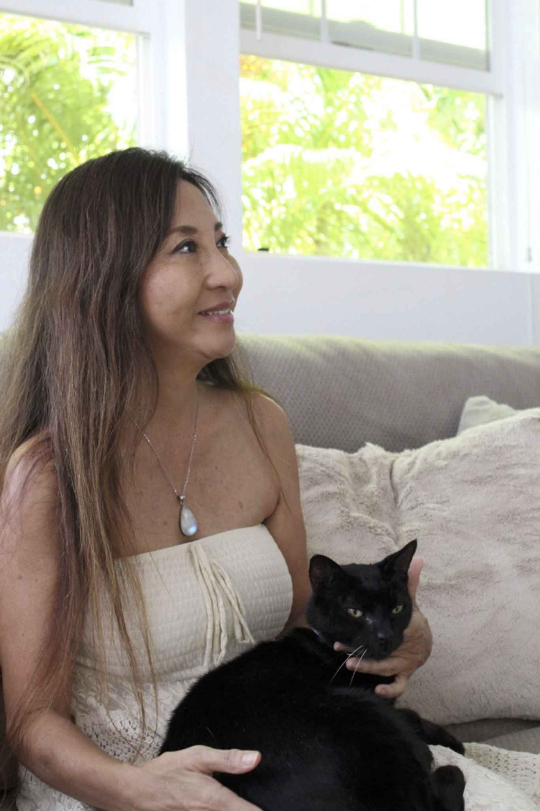
ラニ・パブリッシング（LANI PUBLISHING）は、失われてしまった世界の叡智を深く、そしてわかりやすく、魂の成長を求める人たちに届けるための新しい出版レーベルです。
出版の定義を紙の本にとどめず、電子出版、映像、オーディオなども含めた総合的な情報発信の場として機能させていきます。末長いご愛顧をよろしくお願いいたします。
★ 公式ホームページ https://lani-publishing.jimdo.com
ミラクル・ヒーリング・パワー
奇蹟の時間に体験した天使からの愛のメッセージ
発行日 ２０１７年12
月25
日
著 者 レイア高橋
挿 絵 EMSY
発行者 長沼恭子(Waipuhia)
発行所 Thunder-r-labo.Co., Ltd.（LANI PUBLISHING）
〒
２４０ー０１１２ 神奈川県三浦郡葉山町堀内
https://lani-publishing.jimdo.com
©Leia Takahashi 2017 本書の無断転載を禁じます。